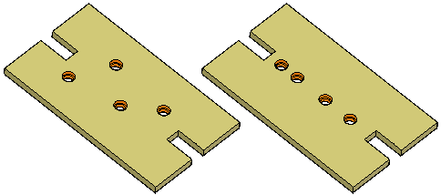
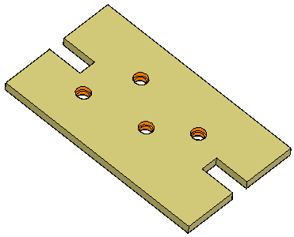
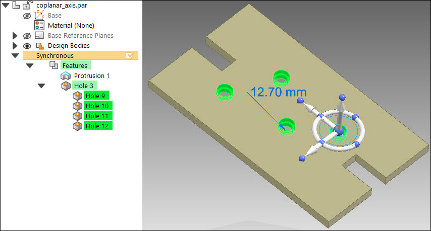
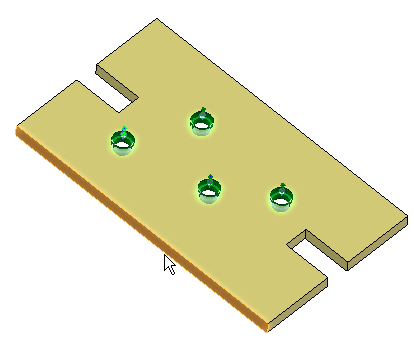
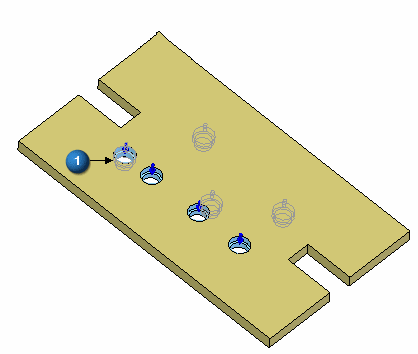
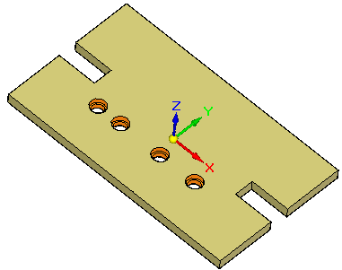
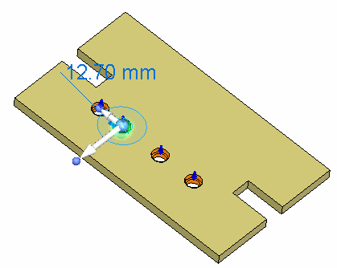
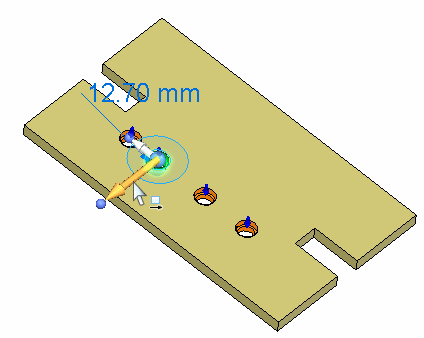
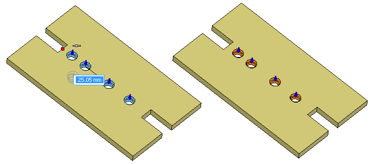

Activity: Aligned Holes
Learn how to use the Aligned Holes relationship command. A random placement of holes exist on a planar part face. Align the holes along an axis parallel to an orthogonal face.
Click here to download the activity file.

If you are using Internet Explorer and a video is not displaying in your training guide, click the Tools tab (or gear icon)→Compatibility View settings, and then clear the selection of Display intranet sites in Compatibility View.
Open coplanar_axis.par.

Select the four holes to align. Select the holes in PathFinder or select them by clicking each hole on the part.

On the Home tab→Face Relate group, choose the Aligned Holes relationship command  .
.
Select the face or plane to align the axis with. Select the face shown.

On the command bar, click the Accept button.

The seed hole (1) remains fixed and all other holes in the select set move to align with the seed.

The holes align along the base X direction. The face selected to align to in the previous step is an orthogonal face, thus the alignment axis of the holes aligns with the base X direction. The Aligned Hole relationship can detect holes that align with one of the base directions.
If you move a hole, all holes that align with it move. If the Aligned Holes item in the Design Intent panel is suppressed, then only the selected holes move.
Select any hole.

Click the steering wheel axis shown to start the move.

Select the midpoint of the edge shown to define the move distance. This movement positions the line of holes centered on the part. You may have to turn on the midpoint keypoint locate on command bar.

When moving the set of holes, the spacing between the holes remains unchanged if the move direction is perpendicular to the alignment axis. If the move direction is not perpendicular to the alignment axis, then the hole's spacing may not remain fixed. To ensure that the holes maintain a fixed spacing, it is recommended that locked dimensions be added to the hole spacing.
In this activity you learned how to align holes along an axis. As long as the alignment axis remains orthogonal, the Aligned Holes design intent relationship maintains the alignment during a synchronous modification. A non-orthogonal alignment can be created by using a custom axis.
Close the file and do not save.
Click the Close button in the upper-right corner of the activity window.